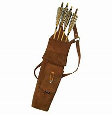
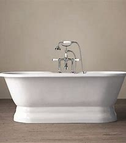

<!DOCTYPE html> 
<html></html>

    <link rel="stylesheet" href="style.css"> 
    <title>Noah's Favorite Words</title> 
<body> 
    
    <h1>Quiver</h1>     

    The Quiver is extremely useful when it comes to storing projectiles, 
        such as <a href="https://en.wikipedia.org/wiki/Arrow">arrows</a>.
            
        
    <h2>Tub</h2>  
        <p>
        The word "tub" has two different noun-definitions: 
            <ul>
                <li>1) a wide, open, deep, typically round container with a flat bottom used for holding liquids, growing plants, etc.</li>
                <li>2) an old, awkward, or run-down vessel.</li>
            </ul>  
        </p>
          
        
    
    <h3>Design</h3> 
    <p>A "design" can be thought of as a plan for the decoration or structure of something.</p> 
       
</body>

